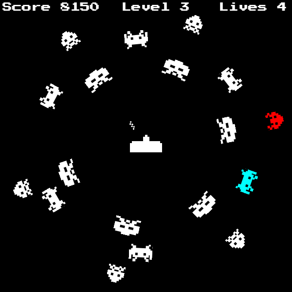
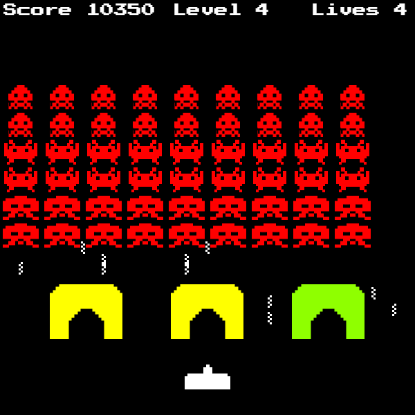
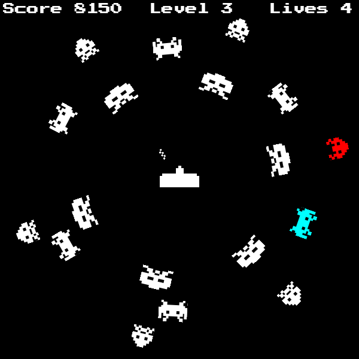
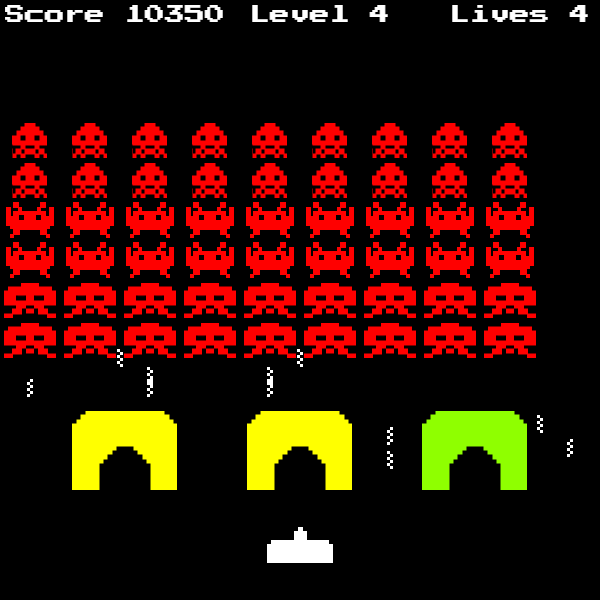

Role: Independent
Platform: PC (Website)
Software: HTML, CSS, JavaScript (with PixiJS API)
Project Description: Space Invaders: The Bizarro Dimension is a top-down shooter resembling the original Space
Invaders, created individually. Similarly to the original Space Invaders, you shoot aliens, but
there are a number of twists that make this game extremely different from the original, incuding but not limited to: themed level gimmicks, varying enemy types, status effects, a boss battle, and a large emphasis on humor.
I only had two weeks to develop this project, but I had a lot of ideas going into it. I was unfamiliar with PixiJS and how it worked, but there was a surprising amount of documentation on it. I used it, and my coding skills at the time, to make the project functional and polished.
I wrote a project proposal detailing the story, the aesthetics, and some overall
features of the game to organize and present my ideas. I also drew some rough sketches showing the game layout. below that project proposal, I documented my progress with the project in the form of a journal, recording what I worked on each
day and my methodology for everything I did. I also kept a list of outside references and assets
that were pulled and modified for this project, including sprites, audio, and other APIs.
 


